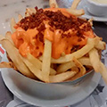
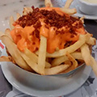

Nossa História
Tudo começou com um casamento, o ano era de 2013!
Larissa foi com seus pais e seu irmão para o casamento da filha de um amigo. Chegando na festa encontraram uma mesa para os quatro e lá ficaram conversando por um bom tempo. Em contrapartida, Ney estava no mesmo casamento que era da amiga de sua irmã Lívia, mas ela, ele, e o Guto (namorado da Lívia) não encontraram mesa para se sentar. Até que decidem perguntar para as pessoas se poderiam sentar-se em suas mesas; pela ironia do destino, Ney decide perguntar para a mesa em que a Larissa estava sentada. Acabaram conseguindo lugares na mesa dela.
Depois de um tempo, após todos se cumprimentarem e conversarem, Ney demonstra interesse e resolve puxar assunto com a Larissa, a mãe dela sugere para que sentem um ao lado do outro, os dois só faltaram se esconder debaixo da mesa de tanta vergonha! Larissa não estava tão interessada nele, mas já havia despertado um certo interesse pelo modo de como ele se portava. Ele até a chamou para dançar, ela não aceitou!! Maldade..rs!!
Ao final da festa trocaram telefone depois telefonaram e decidiram se encontrar como Eduardo e Mônica, só que não se encontraram no Parque da cidade, foram ao Cinema assistir à Gravidade! Depois daquele dia não conseguiram mais parar de se ver, namoraram, noivaram e como a música do Renato Russo que diz:
E, mesmo com tudo diferente
Veio mesmo, de repente
Uma vontade de se ver
E os dois se encontravam todo dia
E a vontade crescia
como tinha de ser
...
E os dois comemoraram juntos
E também brigaram juntos, muitas vezes depois
E todo mundo diz que ele completa ela e vice-versa
Que nem feijão com arroz
É tão bom amar!!
Quem um dia irá dizer que existe razão
Nas coisas feitas pelo coração?
E quem irá dizer
Que não existe razão?


 
